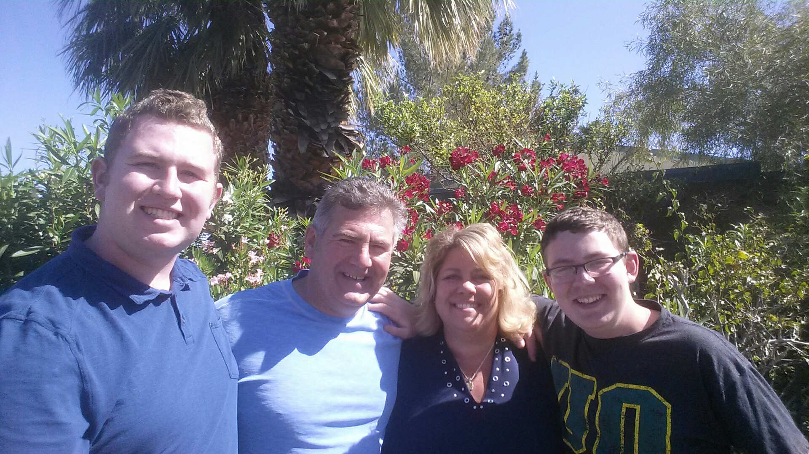
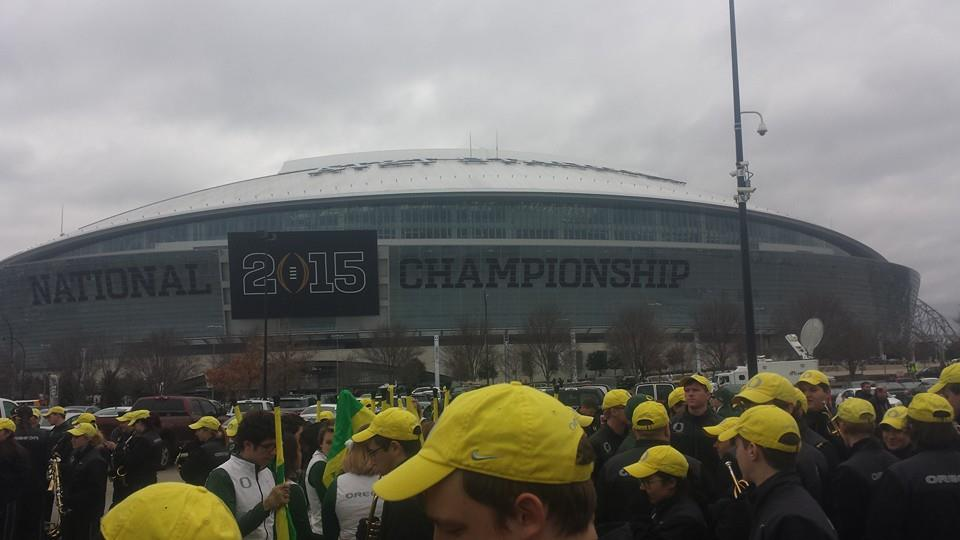

Welcome to My GitHub User Page
Thank you for coming and checking out my Github page. This page gives me an opportunity to provide information about myself and my experience as a student at the University of Oregon.
About Myself
I am an Oregon native, hailing from the small town of Turner outside of Salem. My family back home consists of my mom, dad, younger brother, and our dog Jedi. With Eugene only an hour away from home, it made sense to attend the prestigious university right in my back yard. 
My College Experience (So Far)
Although I am only a freshman, I have already gained so much from college. Living in the business residential dorms this past year has introduced me to a network of other students and friends I couldn't have found anywhere else. I enjoy going to classes now more than ever as the professors provide engaging lectures with interesting perspectives. I joined the Oregon Marching Band and spent my fall term rehearsing and performing. I attended all of the home football games, as well as the Pac-12 Championship, the Rose Bowl, and the College Football National Championship. What a year!